Circular Pattern command (3D features)
Use the Home tab→Features group→Circular Pattern command
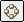
to construct a 3D circular pattern of selected elements. For example, you can construct a hole feature, and then construct a circular pattern of holes using the hole feature as the parent element of the pattern.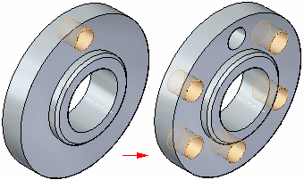
Pattern features behave as a set when performing synchronous modifications, such as moving faces using the steering wheel. If you move a face in one of the pattern occurrences, all the corresponding faces in all the other pattern occurrences also move.
You can suppress individual pattern members to define gaps in a pattern to avoid other features.
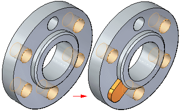
Workflow
-
Select the elements to pattern.
-
Start the Circular Pattern command.
-
Hover over a face and the dynamic pattern profile appears. If you move off the face, the pattern profile disappears. In the synchronous environment, if you lock to the face plane by pressing F3 or by clicking the lock icon, the pattern profile always appears.
Note:You dynamically drag the pattern profile by using the diameter control point (1). You press C and the control point of the profile is at the center (2) of the profile. Pressing C again switches back to diameter control point.
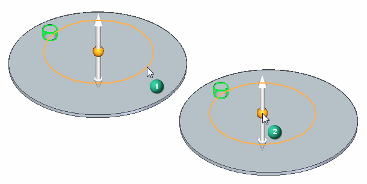
-
Click to define pattern profile position. A pattern preview appears.
-
Define the pattern parameters using the command bar and the dynamic input boxes in the graphics window.
-
Right-click or click the Accept button to create the circular pattern.
Selecting the elements to pattern
You can select features, faces, and face sets as the parent elements to pattern. You can select the elements in the graphics window or in PathFinder.
Starting the Circular Pattern command
The Circular Pattern command is only available when you select valid elements first.
Pattern profile preview
Hover over any planar face, reference plane, or base coordinate system plane for the pattern profile preview to appear. If you move off the face or plane, the pattern profile disappears. You can lock to the face or plane and the pattern profile always appears.
You also define the axis of rotation for the circular pattern when positioning the pattern profile. For example, to place a circular pattern of the hole shown, the center of the circular planar face that the hole pierces is appropriate. In this example, use the Keypoints option on the command bar to make it easier to position the axis of rotation handle at the center point of the circular model face.
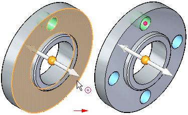
Defining the pattern parameters
You can use the command bar and the dynamic edit boxes in the graphics window to define the pattern parameters you want. For example, you can change the number of occurrences using the Count box, and whether a partial or full circle pattern is constructed. Use the Full Circle and Partial Circle options on the command bar to specify a full or partial circular pattern.
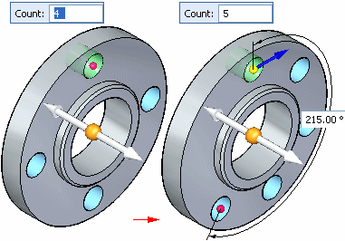
You can construct circular patterns with the following placement options:
-
Fit
-
Fixed
-
Fit example
With the Fit option and a full circle pattern, you specify the number of occurrences.
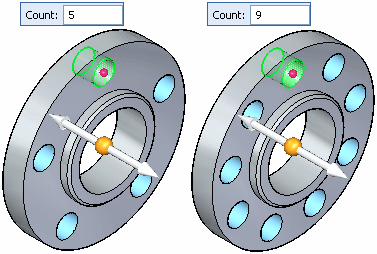
If you specify a partial circular pattern, you also specify the sweep angle of the arc and the pattern direction. The pattern direction controls whether the pattern occurrences are copied in a clockwise or counter clockwise direction. You specify the pattern direction by clicking the direction arrow, as shown below.
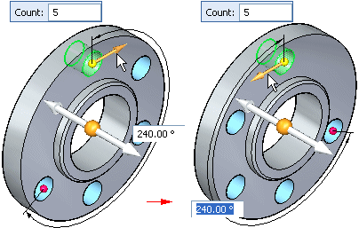
-
Fixed example
With the Fixed option, you specify the total the number of occurrences, the angular spacing between occurrences, and the pattern direction.
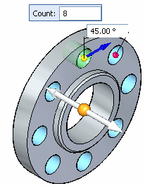
You can also use the Fixed option to create a full circular pattern where the angular spacing between the parent feature and the last occurrence is less than the defined angular spacing. For example, with a pattern count of 8, and a defined angular spacing of 47°, the angular spacing between the parent feature and the last occurrence will be 31°.
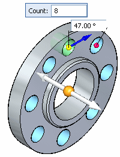
Suppressing pattern occurrences
You can suppress individual patterns occurrences or you can suppress a group of pattern occurrences. You can suppress occurrences while you are constructing the pattern or you can edit the pattern later to suppress occurrences.
-
Suppressing individual occurrences
You suppress individual occurrences in patterns with the Suppress Occurrence button on the command bar. With the pattern feature selected, you can click the Suppress Occurrence button on the command bar, and then click occurrence symbols to specify which occurrences you want to suppress. The symbols change size and color to indicate that the corresponding occurrences are suppressed.
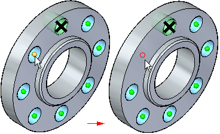
You can also drag the cursor to fence any number of occurrences.
You can also display suppressed pattern occurrences with the Suppress Occurrence button. Click the button and then select the suppressed occurrences you want to appear.
-
Suppressing occurrences using a sketch region or plane
You can also suppress pattern occurrences using a sketch region or planar face. With the pattern selected, you can click the Suppress Regions button, and then select the sketch region that encloses the occurrences you want to suppress. The occurrences inside the region are then suppressed, and a suppression direction arrow appears.
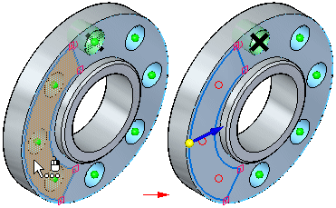
You can click the direction arrow to specify that the occurrences outside the sketch region suppress instead.
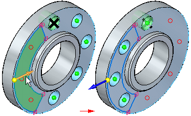
Editing pattern parameters
You edit the parameters for an existing pattern by first selecting the pattern using PathFinder or QuickPick. Selecting the pattern displays the pattern action handle.
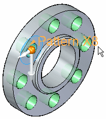
When you click the pattern action handle, the Pattern command bar and the pattern dynamic edit boxes appear in the graphics window. You can then edit the pattern parameters, change the pattern placement option (Fit or Fixed), suppress occurrences, and so on.
Deleting pattern occurrences
You can also delete pattern occurrences. Position the cursor over the pattern occurrence you want to delete. When the ellipsis appears, click to display QuickPick. You can then use QuickPick to select the pattern occurrence, and then press Delete to delete it.
When you delete a pattern occurrence, the software is actually suppressing the corresponding symbol on the pattern sketch. Deleting, rather than suppressing, an occurrence can be useful when working with large or complex models, because you do not have to edit the feature to suppress the occurrence. To restore the deleted occurrence, you can edit the pattern feature to display the suppressed occurrences.
Adding new elements to an existing pattern
You can add new elements to an existing pattern using the Add to Pattern button on the command bar when you are editing an existing pattern. For example, if you add a chamfer feature to the original feature that was patterned, you can edit the pattern feature, and then use the Add to Pattern button on the command bar to select the chamfer and add it to the pattern.
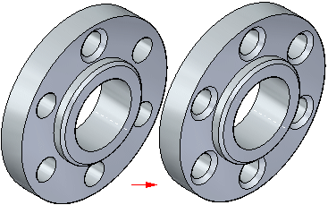
Synchronous editing of pattern features
Pattern features behave as a set when performing synchronous modifications, such as moving faces using the steering wheel. If you move a face in one of the pattern occurrences, all the corresponding faces in all the other pattern occurrences also move.
Guidelines for pattern features
-
You can pattern multiple elements in one operation.
-
You can suppress individual occurrences in a pattern.
-
You can delete individual feature occurrences in a pattern.
-
You can add features to an existing pattern.